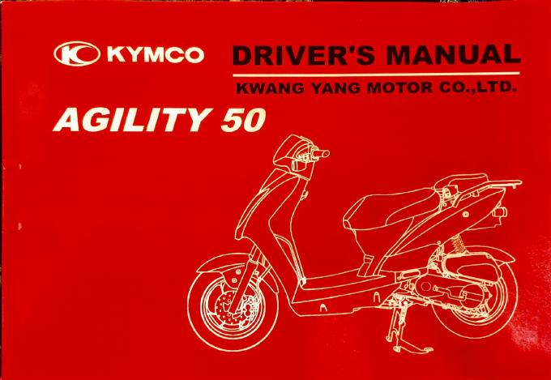

Documents
The original paperwork that came with the scooter — scanned and archived here so the physical copies can stay in the seat compartment. These are the authoritative source documents behind the specifications and maintenance intervals used across this wiki.
What's on this page
Two official Kymco documents supplied with the bike: the
Driver's Manual (owner's handbook — contains the factory maintenance chart and the full specifications) and the
Maintenance Passport (warranty terms and the dealer service-stamp booklet). Open each one in your browser or download a copy. For external reference manuals (workshop manual, parts catalogs, 2T/125 manuals), see the
Manuals & Resources page instead. The insurance policy wording (
Conditions Générales Assur'Auto) has its own page:
Assurance.

Driver's Manual
The official Kymco owner's handbook for the Agility 50. Covers controls, daily checks, fluid changes, and emission control. Contains the periodic inspection & maintenance schedule (p. 39) and the full factory specifications (p. 40) used as the baseline for this wiki.
PDF
48 pages
10.2 MB
English
Maintenance Passport [Passeport d'entretien]
The Kymco Morocco warranty and service booklet (French / Arabic). Holds the warranty conditions, the dealer service-stamp schedule (controls at 300, 1 000, 3 000 km, then every 2 000 km), and blank intervention logs for recording each visit.
PDF
16 pages
2.6 MB
Français / العربية
Read in the browser
Prefer not to leave the page? Expand a document below to read it inline. The PDF only loads when you open its panel, to save mobile data.
Preview — Driver's Manual (48 pages, 10.2 MB)
If the preview doesn't appear, open the Driver's Manual in a new tab.
Preview — Maintenance Passport (16 pages, 2.6 MB)
If the preview doesn't appear, open the Maintenance Passport in a new tab.
Generic vs. model-specific content
Both documents are printed for several Kymco models, so some rows don't apply to the Agility 50 scooter — for example the passport's
« serrage de la chaîne tous les 500 km » (drive-chain tightening) is marked
pour les modèles VisaR and is irrelevant to the chain-free CVT Agility. The
Maintenance Schedule page already filters these down to the items that actually apply, adjusted for Marrakech conditions.